TODAS LAS ESPECIALIDADES ODONTOLÓGICAS
Tras 25 años de práctica clínica conjunta como equipo multidisciplinar, nuestras especialidades odontológicas son: odontología general, cirugía oral e implantología, periodoncia, odontopediatría, ortodoncia y estética dental y facial. Nuestra visión global y humanística se caracteriza por ofrecer siempre las soluciones más eficaces y eficientes. Cuidamos la comunicación y el trato con los pacientes, para evitar la tensión y el stress que supone “la visita al dentista”.
PREVENCIÓN
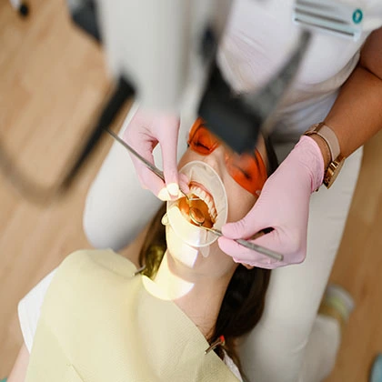
ODONTOPEDIATRÍA
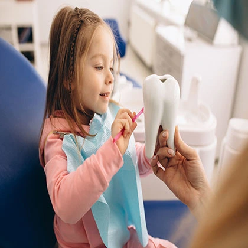
ODONTOLOGÍA GENERAL
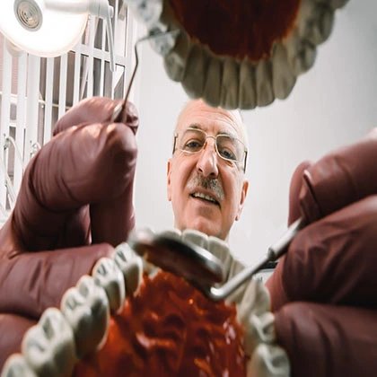
PERIODONCIA
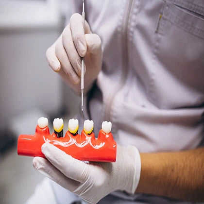
ENDODONCIA
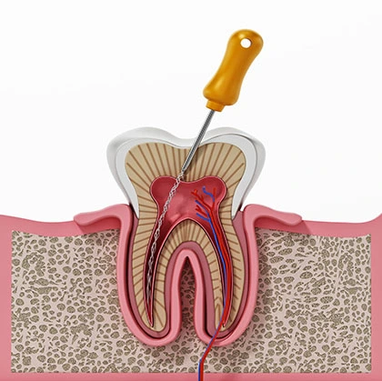
ORTODONCIA
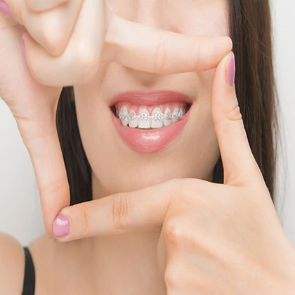
ORTODONCIA INVISIBLE
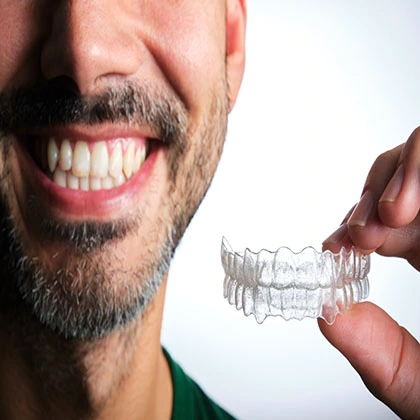
IMPLANTOLOGÍA
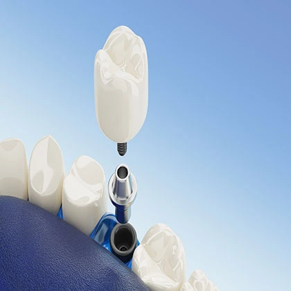
PRÓTESIS DENTALES FIJAS
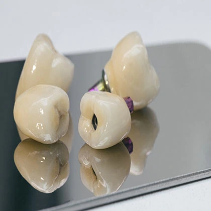
PRÓTESIS DENTALES REMOVIBLE
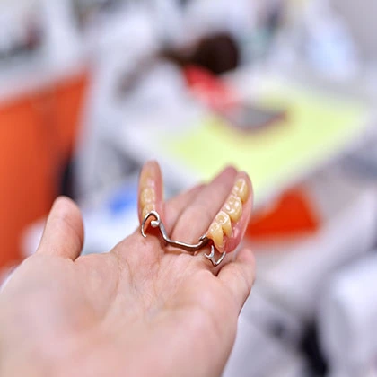
CIRUGÍA Y MEDICINA ORAL
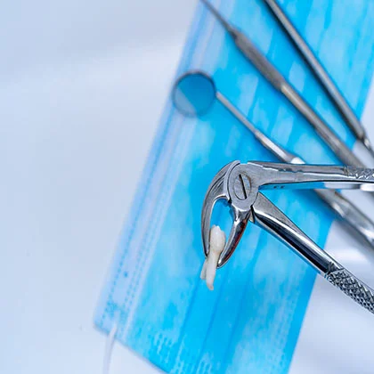
ESTÉTICA DENTAL
PROCESO DE FINANCIACIÓN DENTAL
PARA NUESTROS PACIENTES
Te ofrecemos facilidades de pago y soluciones de financiación flexibles, comodas y adaptadas a tu presupuesto, para el tratamiento dental que necesitas:
- Todo tipo de tratamientos
- Cuotas adaptadas
- Tramitación rápida